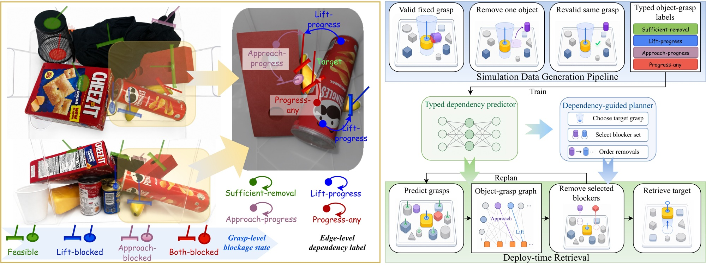
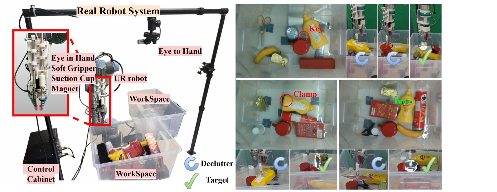

Intervene
Fix a target grasp. Remove one surrounding object and test whether approach, lift or full feasibility improves.
GRASP-CONDITIONED DEPENDENCY GRAPHS
Which objects block this grasp?
1 Department of Computer Science and Technology, Tsinghua University
2 School of Reliability and Systems Engineering, Beihang University
3 Department of Mechanical Engineering, Tsinghua University
4 School of Engineering, Hebei Normal University
* Equal contribution † Corresponding authors

Minimal-intervention retrieval asks a robot to extract a target from clutter while limiting non-target removals. GCDG represents candidate grasps as action nodes and predicts typed dependencies on object–grasp edges. The planner compares candidate grasps through their blockers and updates its plan after every intervention.
Fix a target grasp. Remove one surrounding object and test whether approach, lift or full feasibility improves.
Use observed object features, grasp geometry and relational context to predict four dependency labels per edge.
Choose a grasp and a short blocker-removal prefix. Refresh the observation and replan after the scene changes.
GCDG DENSE BENCHMARK · V1.0
A benchmark for dependency prediction and minimal-intervention planning, with 25–27 objects per dense scene, parallel-jaw and suction proposals, typed intervention labels and minimal blocker sets.
| Split | Scenes | Target samples | Parallel-jaw | Suction |
|---|---|---|---|---|
| Train | 350 | 9,090 | 112,521 | 106,428 |
| Validation | 75 | 1,950 | 24,462 | 22,792 |
| Test | 75 | 1,945 | 24,321 | 22,704 |
The annotation release includes fixed splits and SHA-256 manifests. Stored graph inputs can be used without running a simulator or a native grasp SDK. Third-party meshes, textures and native proposal backends are acquired separately.
python scripts/download_benchmark.py --split all --output data --extractEvaluate the representation, the planning trade-off and the execution interface separately. Each task has a fixed cohort and protocol.
75 test scenes · 1,945 target samples · mean ± sample SD over seeds 7/11/23
| Method | AP (%) ↑ | F1 (%) ↑ | Blocker IoU (%) ↑ |
|---|
G2N2 is adapted to the common dependency-prediction interface. Full ablations and all seeds are included in the release.
10 dense test scenes · the same 256 targets per method · fixed model seed 7
| Method | Retrieved ↑ | Success (%) ↑ | Mean removals ↓ |
|---|---|---|---|
| Direct | 33 / 256 | 12.9 | 0.42 |
| Nearest | 52 / 256 | 20.3 | 4.81 |
| Mechanical | 94 / 256 | 36.7 | 3.61 |
| X-Ray | 124 / 256 | 48.4 | 3.36 |
| GCDG | 131 / 256 | 51.2 | 2.53 |
Fresh initial scene for each target. Five-removal budget including shared fallback.
4 development scenes · 15 objects per scene · 4 target orders · 160 target trials per condition
| Condition | Retrieved ↑ | Relocations ↓ | Complete sequences ↑ |
|---|
The paper uses seed 11, selected post hoc on the original-order development runs and fixed before the additional orders. All five seeds are shown here. Additional orders reuse the same four scenes; unattempted targets remain in the denominator.

Inspect the included real benchmark sample, reproduce saved-result counts, or download the full dataset to train and evaluate the released architectures.
git clone https://github.com/wanhaoniu/GCDG.git
cd GCDG
python -m pip install -e .
python scripts/inspect_sample.py --dataset examples/benchmark
python scripts/recount_ordered.py@misc{niu2026gcdg,
title={Minimal-Intervention Target Retrieval in Cluttered Scenes
with Grasp-Conditioned Dependency Graphs},
author={Niu, Wanhao and Ke, Qiyan and Sun, Yuan and Zhang, Chongrui
and Zhou, Huaidong and Rong, Yongfeng and Zhang, Shuang
and Sun, Fuchun},
year={2026},
url={https://github.com/wanhaoniu/GCDG}
}Supported by the Beijing Natural Science Foundation (Nos. L233006 and L253006), and the Joint Funds of the National Natural Science Foundation of China (No. U22A2057).
Correspondence: Huaidong Zhou and Fuchun Sun.